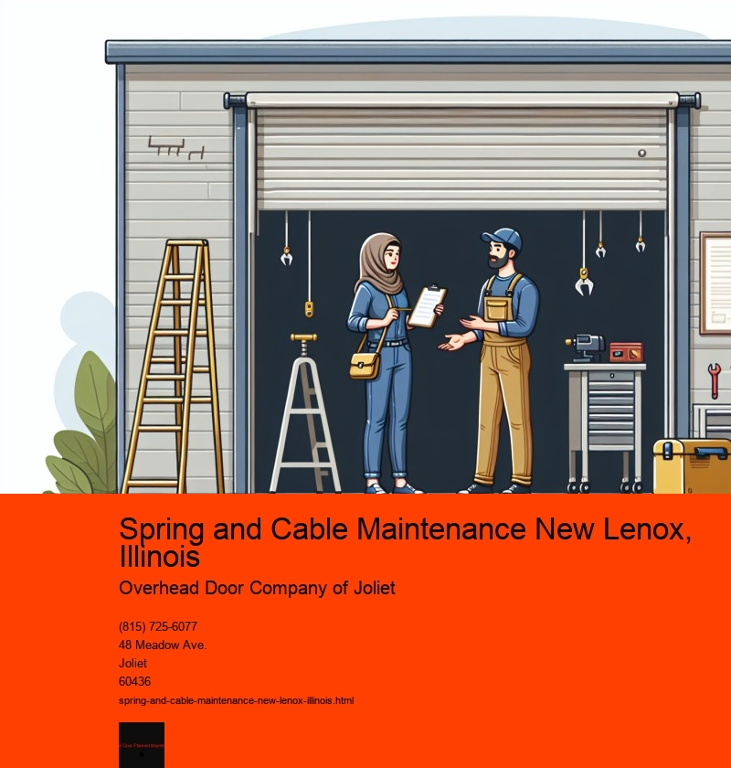

Spring and cable maintenance is an essential aspect of ensuring the safety and functionality of various mechanical systems in New Lenox, Illinois. This seemingly routine task plays a pivotal role in maintaining the integrity and longevity of everything from garage doors to more complex machinery. Given the diverse climate and the wear and tear experienced by mechanical systems in this region, regular maintenance is not just advisable, but necessary.
In New Lenox, the change of seasons can be quite pronounced, with harsh winters and hot summers. These conditions can affect the performance of springs and cables, which are often made from metal that expands and contracts with temperature changes. Over time, this can lead to metal fatigue or even failure if not properly maintained. For example, garage doors, which are a common fixture in many New Lenox homes, rely heavily on the smooth operation of springs and cables. When these components are neglected, they can break unexpectedly, potentially causing significant inconvenience or even injury.
Regular maintenance involves a few key steps. First, visual inspections can identify signs of wear and tear, such as rust, fraying, or misalignment. Rust is particularly common in areas with high humidity or where salt is used on roads during winter months, as is the case in New Lenox. Early detection of these issues can prevent more serious problems down the line. Second, lubrication is crucial for reducing friction and preventing rust. Using a high-quality lubricant specifically designed for metal components can extend the life of springs and cables significantly.
Furthermore, the tension of the springs and cables should be checked and adjusted as necessary. Springs under too much tension can snap, while those with too little tension may not function properly. This adjustment requires specialized knowledge and tools, highlighting the importance of hiring professionals for maintenance tasks. In New Lenox, there are numerous skilled technicians who are familiar with the specific challenges posed by the local climate and who can perform these adjustments safely and effectively.
Beyond just preventing mechanical failure, regular spring and cable maintenance can also enhance the overall efficiency of systems. Well-maintained garage door systems, for instance, will operate more smoothly and quietly, providing a better user experience and reducing strain on the motor. This not only prolongs the life of the door itself but can also contribute to energy savings, as doors that seal properly help maintain the desired temperature inside a home.
In conclusion, spring and cable maintenance is a crucial task for residents and businesses in New Lenox, Illinois. Given the potential risks associated with neglecting these components, such as mechanical failure or injury, regular inspections and adjustments are essential. By investing in routine maintenance, individuals can ensure the safety, efficiency, and longevity of their mechanical systems, ultimately saving both time and money. In a community like New Lenox, where seasonal changes can be extreme, staying proactive about maintenance is not just smart-its necessary for peace of mind and the smooth operation of daily life.
Checking Spring Tension New Lenox, Illinois
